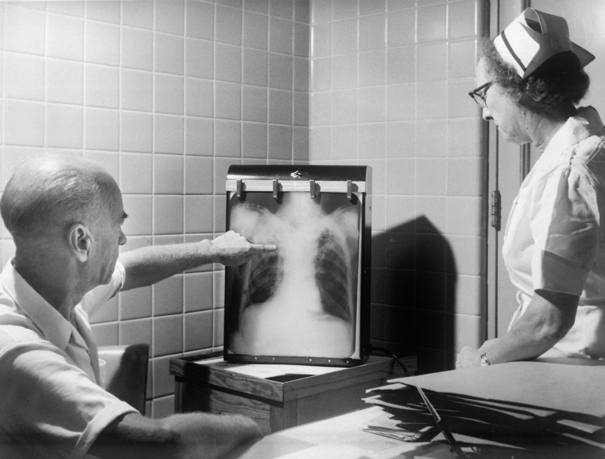

Next-Gen Pulmonary Imaging
Precision Monitoring.
Zero Radiation.
Redefining lung cancer longitudinal care through Physics-Informed AI and EIT technology. High-fidelity diagnostics, delivered right at the bedside.